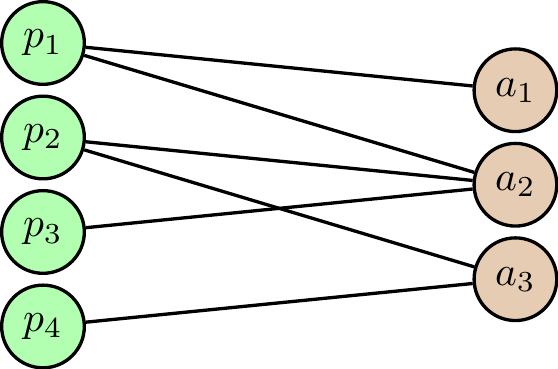
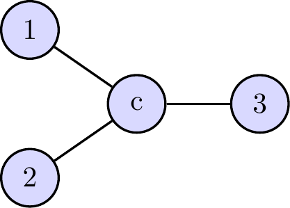
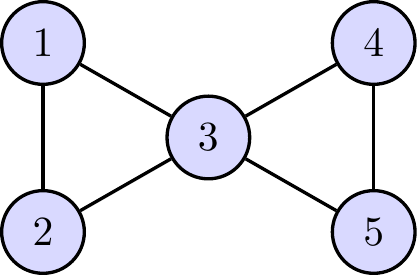

3 Sesión 3: Métricas y análisis de redes: Centralidad
3.1 Objetivos
- Entender qué significa “ser importante” en una red y por qué existen múltiples centralidades.
- Definir y calcular las centralidades: \(C_D\) (grado), \(C_C\) (cercanía), \(C_B\) (intermediación), y centralidad de vector propio.
- Interpretar cada métrica en redes ecológicas de interacción (planta–polinizador, hospedero–parásito, tróficas).
- Identificar fortalezas, limitaciones y cuándo conviene usar cada medida.
3.2 Recordatorio: grafo simple y notación
Consideremos un Grafo simple (no dirigido) esto es \(G=(V,E)\), donde:
- \(V\) es el conjunto de vértices (nodos).
- \(E \subseteq \{\{u,v\}: u,v\in V,\ u\neq v\}\) es el conjunto de aristas.
Definición: Vecindad
Se define una vecindad de \(v\): \(N(v)=\{u\in V: \{u,v\}\in E\}\).
Definición: Grado: \(\deg(v)=|N(v)|\).
TipRedes de interacción ecológica:
- Planta–polinizador (bipartita, no dirigida por simplicidad).
- Hospedero–parásito (bipartita).
- Red trófica (naturalmente dirigida; veremos la versión no dirigida como aproximación).
3.3 Distancias y caminos más cortos
Definición: Camino
Un camino es una sucesión de vértices \(v_0,v_1,\dots,v_k\) tal que \(\{v_{i-1},v_i\}\in E\).
Definición: Distancia geodésica
La distancia geodésica (o distancia de grafo): \[ d(u,v)=\min\{k: \text{existe un camino de longitud }k\text{ entre }u\text{ y }v\}. \]
NotaConectividad
- Un grafo es conexo si para todo \(u\neq v\) existe un camino entre ellos.
3.4 Caminos más cortos: contar geodésicas
En varias métricas necesitamos contar cuántos caminos más cortos hay.
- Sea \(\sigma_{st}\) el número de caminos más cortos (geodésicos) entre \(s\) y \(t\).
- Sea \(\sigma_{st}(v)\) el número de esos caminos que pasan por \(v\) (como vértice interno).
ImportanteIntuición
Si una especie \(v\) está “en medio” de muchos caminos más cortos entre pares de especies, entonces puede actuar como puente o cuello de botella.
3.5 Representación matricial
Sea \(|V|=n\) y vértices \(1,\dots,n\).
- Matriz de adyacencia \(A\in\{0,1\}^{n\times n}\): \(A_{ij}=1\) si \(\{i,j\}\in E\), y 0 en otro caso.
- Matriz de grados \(D\): diagonal con \(D_{ii}=\deg(i)\).
4 Tipos de centralidad:
4.1 Qué mide una “centralidad”
Una centralidad es una función que asigna a cada nodo \(v\) un número real (su “importancia”): \[ \text{centralidad: } V\to \mathbb{R}_{\ge 0},\qquad v\mapsto C(v). \] No hay una sola “mejor”: cada definición formaliza un criterio distinto.
NotaEn redes ecológicas
Distintas centralidades pueden sugerir distintos tipos de especies clave: * generalistas (muchas interacciones), * conectores entre grupos, * especies “cercanas” a todas (difusión rápida), * especies influyentes por estar conectadas a otras influyentes.
4.2 Centralidad de grado (Degree centrality)
Definición (no ponderado): \[ C_D(v)=\deg(v). \]
Normalización frecuente (para comparar redes de distinto tamaño, \(|V|=n\)): \[ C_D^{\mathrm{norm}}(v)=\frac{\deg(v)}{n-1}\in[0,1]. \]
TipInterpretación
En una red planta–polinizador, \(C_D\) mide cuántas especies del otro gremio interactúan con \(v\). * Planta con alto grado: polinizada por muchas especies. * Polinizador con alto grado: visita muchas plantas (generalista).
4.2.1 Nota: redes ponderadas (fuerza)
Si las aristas tienen pesos \(w_{uv}\ge 0\) (frecuencia, biomasa, visitas), se usa la fuerza: \[ s(v)=\sum_{u\sim v} w_{uv}. \]
Observación: * \(\deg(v)\) cuenta diversidad de socios. * \(s(v)\) mide intensidad total (puede estar dominada por pocas interacciones muy fuertes).
4.2.2 Ejemplo 1: grado en una red planta–polinizador
Considerar la red bipartita (no ponderada) con plantas \(\{p_1,p_2,p_3,p_4\}\) y polinizadores \(\{a_1,a_2,a_3\}\).
Cálculo de grados
- \(\deg(p_1)=2\) (\(a_1,a_2\)).
- \(\deg(p_2)=2\) (\(a_2,a_3\)).
- \(\deg(p_3)=1\) (\(a_2\)).
- \(\deg(p_4)=1\) (\(a_3\)).
- \(\deg(a_1)=1\), \(\deg(a_2)=3\), \(\deg(a_3)=2\).
NotaInterpretación
\(a_2\) es el polinizador más generalista (se conecta con 3 plantas). \(p_3\) y \(p_4\) son más vulnerables a la pérdida de su(s) socio(s) directo(s).
4.3 Centralidad de cercanía
4.3.1 Centralidad de cercanía (Closeness centrality)
Idea: un nodo es central si está “cerca” de todos los demás.
En un grafo conexo, definimos:
\[ C_C(v)=\frac{1}{\sum_{u\in V\setminus\{v\}} d(v,u)}. \]
Normalización común:
\[ C_C^{\mathrm{norm}}(v)=\frac{n-1}{\sum_{u\neq v} d(v,u)}\in(0,1]. \]
TipInterpretación (difusión)
Si una perturbación (enfermedad, cambio ambiental) se propaga a través de interacciones, un nodo con alta cercanía puede verse afectado (o afectar) rápidamente a muchos otros vía efectos indirectos.
4.3.2 ¿Y si el grafo no es conexo?
Si el grafo tiene componentes desconectadas, algunas distancias son \(\infty\), y \(C_C\) queda mal definida.
Alternativa: cercanía armónica
\[ C_{\mathrm{harm}}(v)=\sum_{u\neq v}\frac{1}{d(v,u)}, \]
donde por convención \(1/\infty=0\).
Interpretación: solo cuentan los nodos alcanzables, penalizando fuertemente distancias grandes.
4.3.3 Ejemplo 2: cercanía en una red “estrella”
Considerar el grafo estrella \(K_{1,3}\): un nodo central conectado a tres hojas.

Distancias
- Desde el centro: \(d(c,1)=d(c,2)=d(c,3)=1\).
- Desde una hoja (por ejemplo, el vértice 1): \(d(1,c)=1\), \(d(1,2)=2\), \(d(1,3)=2\).
Cálculo (normalizado, \(n=4\)):
\[ C_C^{\mathrm{norm}}(c)=\frac{3}{1+1+1}=1,\qquad C_C^{\mathrm{norm}}(1)=\frac{3}{1+2+2}=\frac{3}{5}=0.6. \]
TipInterpretación
El centro es el punto desde el cual se llega más rápido al resto: en ecología, un “hub” puede acelerar la propagación de perturbaciones a través de la red.
4.4 Centralidad de intermediación
4.4.1 Centralidad de intermediación (Betweenness)
Idea: un nodo es central si aparece frecuentemente en caminos más cortos entre otros.
Sea \(\sigma_{st}\) el número de caminos más cortos entre \(s\) y \(t\), y \(\sigma_{st}(v)\) los que pasan por \(v\). En grafos no dirigidos es natural sumar sobre pares no ordenados:
\[ C_B(v)=\sum_{\substack{s<t\\ s\neq v,\ t\neq v}} \frac{\sigma_{st}(v)}{\sigma_{st}}. \]
Normalización común (no dirigida): dividir por \((n-1)(n-2)/2\).
TipInterpretación (“conectores”)
Una especie con alta intermediación puede conectar subcomunidades (módulos) o rutas de flujo (por ejemplo: movimiento de polen, transmisión de parásitos).
4.4.2 Ejemplo 3: intermediación en una “corbata de moño”
Grafo con dos triángulos que comparten el nodo 3:

Paso 1: pares relevantes
Para \(C_B(3)\), miramos pares \((s,t)\) con \(s,t\neq 3\):
\[ \{1,2,4,5\}\Rightarrow \binom{4}{2}=6\text{ pares.} \]
Paso 2: caminos más cortos
- Entre \(1\) y \(2\): camino directo \(1-2\) (no pasa por 3).
- Entre \(4\) y \(5\): camino directo \(4-5\) (no pasa por 3).
- Entre \(\{1,2\}\) y \(\{4,5\}\): el camino más corto siempre pasa por 3.
Cálculo (contando pares no ordenados):
\[ C_B(3)=1\,(1\leftrightarrow 4)+1\,(1\leftrightarrow 5)+1\,(2\leftrightarrow 4)+1\,(2\leftrightarrow 5)=4. \]
Para los nodos \(1,2,4,5\), la intermediación es 0 (no están “entre” otros pares).
TipInterpretación ecológica
El nodo 3 es un conector entre dos “módulos”; su pérdida puede fragmentar la red, aun si otros nodos tienen grados similares dentro de su módulo.
4.5 ¿Cuándo difieren estas métricas?
- Grado mira solo vecindad inmediata (radio 1).
- Cercanía mira distancias a todos (geometría global).
- Intermediación mira control de rutas cortas (puentes/cuello de botella).
- Vector propio mira influencia recursiva.
TipEjemplo
En una red mutualista, una planta con muchas visitas (alto grado) puede tener baja intermediación si está dentro de un módulo denso; una especie “rara” con pocas interacciones puede conectar módulos (alta intermediación).
4.6 Resumen comparativo (qué captura cada una)
| Métrica | Pregunta matemática | Lectura ecológica típica |
|---|---|---|
| Grado \(C_D\) | ¿Cuántos vecinos directos tengo? | Generalismo / diversidad de socios; exposición directa. |
| Cercanía \(C_C\) | ¿Qué tan pequeña es mi distancia promedio al resto? | Accesibilidad global; propagación rápida de perturbaciones/efectos indirectos. |
| Intermediación \(C_B\) | ¿Cuántos caminos más cortos pasan por mí? | Conector entre módulos; “puente” funcional; control de flujo entre grupos. |